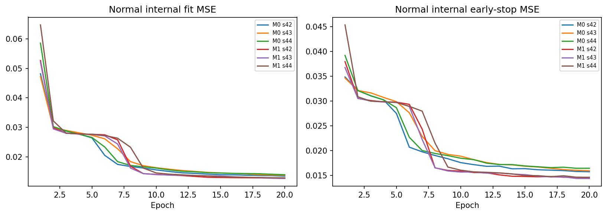

Separating Observation Gaps and Evaluation Coverage in Hydraulic-Pump Anomaly Detection
저자·소속 미기재 — 연구 검토용 한국어 원고
제조 시계열 이상 탐지에서 시간 공백을 무시하는 윈도우와 구간 시작 행의 제외는 서로 다른 평가 문제를 만든다. 본 연구는 파인블랭킹 프레스 유압펌프의 진동·전류 자료를 대상으로, 버스트 처리·예측 가능 범위·경보 후처리를 분리하여 검증하는 재현 사례연구를 제시한다. 정상 20,000행과 이상 600행에서 동일 내용의 중복 1행만 분석 목록에서 제거한 뒤, 관측 버스트를 보존하는 시간순 학습·보정·선택·최종 평가 분할을 고정하였다. 정상만 학습한 LSTM-Autoencoder 및 Isolation Forest의 다섯 변형을 길이 5·10·20, 세 seed에서 비교하였다. 별도 선택 검증의 오경보율 1% 제약 아래 선정된 20행 통계 모델과 단일 행 보완·최근 3회 중 2회 경보는 최종 이상 357행 중 303행을 탐지하고 정상 3,990행에서 오경보 0행을 기록하였다(Recall 0.8487, F1 0.9182, AP 0.9586). 그러나 후처리 전 탐지 315행에서 12행이 순감소했고, 동일 20행 공통 평가에서 버스트 고려는 통계 모델의 Recall을 0.9346에서 0.8497로 낮췄다. 따라서 시간 경계의 존중과 오경보 억제가 평가 수치를 일률적으로 개선한다고 볼 수 없다. 정상·이상이 서로 다른 단일 날짜에 기록되고 고장 시작 시각이 없으므로, 결과는 관측된 상태 라벨의 탐지에 한정되며 고장 조기예측 또는 운전조건에 불변인 고장 판별을 입증하지 않는다.
핵심어: 제조 시계열, 이상 탐지, 관측 공백, 오경보, 선택 편향, 재현성. 본 원고는 실제 실행 결과에 근거한 한국어 연구논문 초안이다. 새로운 범용 알고리즘이나 ICML 채택 가능성을 입증한 논문으로 제시하지 않는다.
파인블랭킹 프레스의 유압펌프 상태 감시는 미탐과 오경보를 동시에 다루어야 한다. 이상을 놓치면 점검 기회를 잃지만, 정상 부하 변화에 반복 경보하면 작업자의 신뢰와 점검 자원이 소모된다. KAMP의 소성가공 예지보전 데이터셋은 유압펌프 상·하부 진동과 전류 관측을 제공한다[1]. 압력 불안정·제품 불량·설비 비가동은 과제의 동기이지만, 사용한 CSV에는 해당 측정값이나 이력이 없다. 본 연구는 이러한 현장 효과를 직접 검증했다고 주장하지 않는다.
기본적인 데이터 진단에서 대부분 0.1초 간격인 기록 사이에 정상 598곳, 이상 20곳의 0.5초 초과 공백이 확인되었다. 행 번호만 연속적으로 묶으면 관측 간격이 서로 다른 윈도우를 같은 길이로 처리한다. 반대로 공백에서 윈도우를 초기화하면 구간 시작과 짧은 구간에서 판단할 수 없는 행이 생긴다. 후자의 행을 제거한 뒤 수치가 높아졌다면, 개선은 더 나은 검출기 때문일 수도 있지만 평가 대상이 쉬워졌기 때문일 수도 있다.
본 연구의 질문은 네 가지다. RQ1: 같은 시점과 같은 길이에서 버스트 경계 처리의 효과는 무엇인가? RQ2: 윈도우 부족 행을 포함한 전체 운영 결과는 공통 행 결과와 어떻게 다른가? RQ3: 오경보 억제와 확률 보정이 검출·미탐·관측 경보 지연에 미치는 영향은 무엇인가? RQ4: 오류가 집중되는 센서 관측 조건과 센서 조합의 한계는 무엇인가?
기여는 새로운 모델 구조의 제안이 아니라, (i) 행·윈도우·시간 공백의 추적 가능한 평가 설계, (ii) 동일 조건 쌍 비교와 표본 수 보조 비교를 통한 긍정·부정 결과의 공개, (iii) 분리된 검증에서 고정한 운영 정책과 최종 평가 손익의 분석, (iv) 원본 데이터·설정·학습 모델·행별 예측·에이전트 지시문을 포함한 재현 패키지다. 실험 범위가 작고 수집 조건이 제한되어 있으므로 범용 우월성이나 통계적 유의성을 결론으로 삼지 않는다.
Isolation Forest는 무작위 분할에서 관측이 고립되는 정도를 이용하는 이상 탐지 방법이다[2]. 본 실험은 scikit-learn 구현의 -score_samples를 연속 이상 점수로 사용하고 모델 내부의 이진 판정을 채택하지 않는다[9]. 정상 시계열의 복원오차를 이용하는 LSTM encoder–decoder 계열[3]은 가이드북의 LSTM-Autoencoder 베이스라인에 해당하는 방법론적 배경이다. 본 구현은 가이드북 구조를 옮긴 것이며 Malhotra 등의 전체 알고리즘을 재현한 것으로 서술하지 않는다.
평가 자체의 결함은 탐지 성능을 과장할 수 있다. Wu와 Keogh는 널리 쓰이는 시계열 벤치마크의 결함과 진전 해석의 문제를 지적했다[4]. Kim 등은 한 점의 탐지를 이상 구간 전체의 정답으로 확장하는 point adjustment가 성능과 순위를 왜곡할 수 있음을 보였다[5]. 본 연구는 그러한 정답 보정을 사용하지 않으며, 인과적인 경보 후처리와 평가 정답의 변경을 구분한다. 불균형 상황의 해석을 위해 Precision–Recall 관점을 중시하되[6], AP와 사다리꼴 PR-AUC를 별도로 계산한다[10].
확률 보정 문헌은 분류 점수와 신뢰할 수 있는 확률을 구별한다[7,11]. 여기서는 검출기를 바꾸지 않고 별도 라벨 보정 단계에 제한된 sigmoid를 적합한다. 이 단계는 감독 정보를 사용하므로 전 과정을 완전 비지도 학습으로 지칭할 수 없다. 본 실험의 시간 공백 기준·분할 비율·FPR 목표는 프로젝트 설계이며 인용 논문이나 대회가 규정한 기준이 아니다.
자료는 정상 파일 press_data_normal.csv와 이상 파일 outlier_data.csv로 구성된다. 가이드북 PDF 9·11쪽에서 AI0_Vibration은 상부 진동, AI1_Vibration은 하부 진동, AI2_Current는 전류임을 확인했다[1]. 각 행은 하나의 시각에 기록된 센서 관측이며 제품 한 개, 가공 사이클 한 번 또는 독립 고장 사건이 아니다. 센서의 물리 단위, 설비 식별자, 제품, 부하·회전수, 구체적 고장 종류와 확정 시각은 확인되지 않았다. 첫 번째 무명 열은 저장된 번호이고 Equipment_state는 평가 라벨이다.
표 1. 원본과 분석 자료의 진단. 버스트 수는 동일 내용 중복 제거 후 0.5초 기준이다.
| 항목 | 정상 | 이상 |
|---|---|---|
| 원본 행 수 | 20000 | 600 |
| 분석 행 수 | 19999 | 600 |
| 결측/센서 변환 실패/시각 변환 실패 | 0 / 0 / 0 | 0 / 0 / 0 |
| 추가 내용 중복 제거 | 1 | 0 |
| 수집 날짜 | 2022-07-12 | 2022-07-17 |
| Equipment_state | 0: 20,000 | 1: 600 |
| 버스트 수 | 599 | 21 |
| 20행 미만 버스트 | 147 (24.54%) | 8 (38.10%) |
| 최대 인접 공백(초) | 16.643 | 8.572 |
TimeStamp·세 센서값·Equipment_state가 모두 같은 두 행 중 최초 행만 유지했다. 정상 원본의 11,565행과 11,566행은 저장 번호만 다르므로 뒤 행을 분석 목록에서 제거했다. 원본 CSV를 수정하지 않았고, 크다는 이유로 센서값을 삭제하거나 winsorization하지 않았다. 중복 제거 뒤 비증가 시각은 없었다. 최종 분석행에는 원본 파일·행·CSV 줄 번호를 남겨 오류 사례를 역추적할 수 있게 했다.
D를 수집 날짜의 두 범주, Y를 관측 상태 라벨, X를 센서라 하자. 이 자료에서는 정상 날짜에 Y=0, 이상 날짜에 Y=1만 관측된다. 따라서 학습된 P(Y|X)는 고장 특성뿐 아니라 날짜별 운전조건의 차이로도 설명될 수 있다. 날짜 자체를 입력에서 제거하는 것은 필요하지만 센서에 반영된 날짜 특성까지 제거했음을 의미하지 않는다.
식별성에 관한 단순한 관찰을 제시한다. 두 날짜에서 각각 관측된 센서 분포를 P₀, P₁라 하자. “고장 상태가 달라서 X가 P₀/P₁를 따른다”는 모형과 “날짜별 부하가 달라서 X가 P₀/P₁를 따르고 라벨은 날짜별로 부여된다”는 모형은 현재 관측된 (X,D,Y)의 분포를 동일하게 만들 수 있다. 따라서 이 관측만으로 두 설명을 구분할 수 없다. 이는 새로운 통계 정리나 인과 효과 추정이 아니라, 추가 수집이 필요한 이유를 밝히는 식별성 논증이다.
실제 고장 시작·정상에서 이상으로 전환하는 기록·정비 또는 고장 확정 시각이 없다. Equipment_state가 시각별 전문가 판정인지 파일 전체에 부여된 상태인지도 미확인이다. 파일 시작이나 버스트 시작을 고장 발생으로 가정하지 않는다. 현재 측정 가능한 대상은 주어진 이상 라벨을 관측 시점에서 탐지하는 능력과 경보의 동작이다. 10Hz 정보만으로 앨리어싱의 유무를 확정하지 않으며 FFT 특징은 사용하지 않는다. 시간영역 특징도 이미 발생한 앨리어싱을 복원하지 못한다.
한 파일의 시간순 관측을 (tᵢ,xᵢ,yᵢ)로 나타낸다. 인접 차이 Δᵢ=tᵢ−tᵢ₋₁가 0.5초를 초과하면 새로운 관측 버스트를 시작한다. 이 정의는 실험 가정이며 기계의 물리적 사이클 정의가 아니다. 분할을 먼저 고정한 후, 길이 L의 후방 윈도우 Wᵢ=(xᵢ₋L₊₁,…,xᵢ)를 구성하고 마지막 관측 i에만 점수를 대응시킨다.
Wᵢᴸ = (xᵢ₋L₊₁,…,xᵢ), τᵢᴸ = tᵢ − tᵢ₋L₊₁.
버전 A는 동일 파일·동일 데이터 분할 안에서 행 순서로 윈도우를 구성하며 버스트 경계를 넘을 수 있다. 버전 B는 윈도우 전체가 한 버스트 안에 있을 때만 유효하다. 두 버전 모두 정상·이상 파일을 연결하지 않고 학습·보정·선택·최종 경계를 넘지 않는다. LSTM 조기 종료용 내부 경계도 보존했다. 중앙 정렬·미래 관측·공백 보간을 금지했다. 행 수 L과 실제 경과시간 τᵢᴸ는 별개다.
모델 m이 점수를 낼 수 있는 마지막 행의 집합을 Eₘ, 모든 사전 후보의 교집합을 C=∩ₘEₘ으로 둔다. C의 행 목록은 모델 점수 계산 전에 저장했다. 모든 길이를 포함한 C와 동일 길이의 A/B 쌍별 교집합을 구별한다. C에서의 성능은 완전한 윈도우가 있는 관측에 조건부인 성능이며 전체 운영 성능의 추정량으로 대체할 수 없다. 예측 가능 비율 |Eₘ|/N과 제외된 클래스별 행 수를 함께 보고한다.
표 2. 다섯 기본 검출기. A/B 쌍은 시간 경계 처리만 다르게 설계하였다.
| 모델 | 입력·검출기 | 경계 |
|---|---|---|
| M0 | 3센서 절댓값, LSTM-AE | A: 미고려 |
| M1 | M0와 동일 구조·조건 | B: 고려 |
| M2 | 한 행의 3센서, IF | 윈도우 없음 |
| M3 | 센서별 5통계, IF | A: 미고려 |
| M4 | M3와 동일 특징·조건 | B: 고려 |
LSTM-AE는 encoder LSTM64→LSTM32, 반복 벡터, decoder LSTM32→LSTM64, 시점별 선형3 출력을 사용한다. 정상 학습 내부 fit 구간의 절댓값으로 MinMaxScaler를 적합하며 평가값을 범위 안으로 잘라내지 않는다. 학습 목적은 전체 시퀀스 평균제곱 복원오차이고, 이상 점수는 마지막 시점 세 센서의 평균제곱오차다. 서로 다른 윈도우 간 LSTM 상태는 전달하지 않는다.
sAE(i) = (1/3) Σⱼ₌₁³ (uᵢⱼ − ûᵢⱼ)².
M2는 원래 부호를 보존한 세 센서를 입력한다. M3/M4는 각 센서의 평균, 모집단 표준편차(ddof=0), RMS=√mean(x²), 최솟값, 최댓값을 계산한 15차원 입력이다. IF용 StandardScaler도 정상 학습 특징에만 적합한다. IF는 n_estimators=300, max_samples=256, contamination=auto이며, 내부 predict 결과 대신 -score_samples를 사용한다. 오염률에 전체 이상 비율을 대입하지 않는다. 모든 검출기는 정상 학습 자료로만 적합한다.
윈도우 부족 행을 제외하지 않고 M2로 보완한다. 서로 다른 원시 점수는 척도가 달라 직접 연결하지 않는다. seed r 및 모델 m마다 정상 보정 점수의 분위수를 표준정규 분위수에 대응하는 조각별 선형 함수 gₘᵣ로 변환한다. 분위수 수준은 0.001, 0.005, 0.01, 0.025, 0.05, 0.1, 0.25, 0.5, 0.75, 0.9, 0.95, 0.975, 0.99, 0.995, 0.999다. 양 끝은 인접한 서로 다른 매듭의 기울기로 외삽하며, 중복 분위수는 처음 수준을 남긴다. 꼬리 순위를 포화시키지 않는 이 변환은 확률 보정이 아니다.
zₘᵣ(i) = gₘᵣ(sₘᵣ(i)) [i∈Eₘ], 아니면 g₂ᵣ(s₂ᵣ(i)); Sₘ(i) = (1/3) Σᵣ zₘᵣ(i).
운영 점수는 세 seed 42·43·44의 동일 가중 평균이다. 정상 보정 자료 전체의 결합 점수 분포에서 임계값을 다시 구하므로 보완 모델의 영향을 포함한다. 최종 선정은 이 전체 행 운영 방식의 성능을 기준으로 한다. seed별 지표의 평균과 ensemble의 지표는 같은 값이 아니며 별도로 제시한다.
정상 보정 점수의 (1−α) 분위수를 method=higher로 계산하고 S>qα일 때만 이상으로 판정한다. α∈{0.005,0.01,0.02,0.05}이며 임계값과 같은 동점은 정상이다. 보정 자료에서의 관측 FPR은 저장하지만, 시간 의존성과 분포 변화가 있는 선택·최종·현장 자료에서 해당 FPR이 유지된다고 보장하지 않는다.
bᵢ = 1{Sᵢ > qα}; aᵢ² = bᵢ bᵢ₋₁; aᵢ²⁄³ = 1{bᵢ + bᵢ₋₁ + bᵢ₋₂ ≥ 2}.
경보 후보는 후처리 없음, 연속2회, 최근3회 중2회다. 버스트 시작에서 기록을 초기화하며 아직 없는 이전 관측은 음성으로 간주한다. 따라서 최근3회 규칙은 두 번째 관측부터 경보할 수 있다. 현재까지의 판단만 이용하며 경보를 이전 시각으로 소급하지 않는다. 원시 점수의 순위 지표와 후처리된 이진 경보 지표를 혼동하지 않는다.
추가 확률 단계는 보정 구간의 정상·이상 라벨로 p=σ(a(S−μ)/s+b)를 적합한다. μ,s는 보정 점수의 평균·표준편차이며 a≥0, 목적함수는 평균 로지스틱 손실+a²/(2n)이다. 검출기 재학습은 없다. 기존 임계값을 같은 sigmoid로 대응시켜 판정의 변화와 Brier score·log loss·신뢰도를 별도 평가한다. 미보정 점수는 확률이 아니므로 비교 기준 sigmoid(S)는 명시적으로 임의의 미보정 대용값이며, 보정 자료의 이상 비율을 쓰는 상수 기준도 함께 제시한다.
표 3. 윈도우 생성 전 고정한 분할. 시작·종료 시각의 초 단위 정보는 부록 A에 제시한다.
| 상태 | 분할 | 행 | 버스트 |
|---|---|---|---|
| 정상 | train | 12012 | 360 |
| 정상 | calibration | 2011 | 63 |
| 정상 | selection | 1986 | 58 |
| 정상 | test | 3990 | 118 |
| 이상 | calibration | 132 | 4 |
| 이상 | selection | 111 | 4 |
| 이상 | test | 357 | 13 |
정상은 시간순 약60% 학습·20% 개발·20% 최종, 이상은 약40% 개발·60% 최종으로 분리했다. 경계는 누적 행 수가 목표에 가까운 버스트 사이로 정했고 버스트를 분할하지 않는 것을 우선했다. 개발 자료를 클래스별로 다시 앞쪽 보정·뒤쪽 선택 검증으로 나누었다. 정규화 및 검출기 적합에는 정상 학습만 사용한다. 정상 학습 내부 약85%와 나머지 약15%를 버스트 단위로 나눠 LSTM fit과 조기 종료에 사용했다. IF는 정상 학습 전체를 사용한다.
0.2·0.5·1초 기준의 버스트 구성을 정상 학습에서 비교했으며 행별 분할과 360개 버스트 구성이 동일해 중복 실험을 생략했다. 기본 후보는 M2 한 조건과 나머지 네 모델×세 길이, 총13개다. 네 임계값 수준과 세 경보 정책을 결합한 156개 운영 후보를 선택 검증에서 비교했다. FPR≤1%를 만족하는 후보 중 Recall, F1, AP, 측정 실행시간 순으로 선택하고 최종 평가 전에 selection_lock.json을 저장했다. F1 우선 대안도 별도로 고정했다. 두 기준은 동일 후보를 선택했다.
전체 자료의 요약 통계는 분할을 정하기 전에 이미 확인했다. 따라서 본 연구를 완전히 미관측인 외부 테스트로 묘사하지 않는다. 분할과 프로토콜은 성능 계산 전 로컬 파일로 고정했지만 외부 공개 사전등록은 아니다. 최종 평가 오류를 본 뒤 모델·특징·길이·임계값·후처리를 바꾸지 않았다. 최종 단계의 코드 수정은 검증 요약의 중복 키 오류 수정과 저장된 예측의 분석·문서 생성에 한정되었다.
모든 기본 조건은 seed42·43·44로 반복했다. CPU 2 threads, LSTM Adam 학습률0.001, batch128, 최대20epoch, 조기종료 patience4/min_delta=10⁻⁵, 학습률 감소 factor0.7/patience2를 고정했다. 기본 LSTM18개 중16개가20epoch에 도달했다. 따라서 LSTM의 계산 예산 부족 가능성을 배제할 수 없으며 IF와의 일반적 우열을 주장하지 않는다. 가이드북은 최대800epoch·patience120이고 이번 결과는 그 원문 성능의 정확 재현이 아니다.
개발 검증에서 버스트 고려의 Recall 또는 F1 개선이 나타난 쌍에 한해 미고려 모델의 학습 윈도우를 고려 모델 수로 무작위 축소하는 보조 비교를 수행했다. LSTM은 조기 종료 윈도우 수도 맞췄다. 개수만 맞췄으므로 실제 시점 구성과 학습 경로까지 동일한 인과 대조는 아니다. 센서 영향은 M2의 비어 있지 않은 일곱 센서 부분집합, 특징 영향은 M4 길이10의 15개 특징을 하나씩 제거하는 실험으로 제한했다. 이 보조 후보들은 최종 선택 후보를 늘리는 데 사용하지 않았다.
양성은 이상1이다. TP/FN/FP/TN, Recall, Precision, F1, F2, FPR, FNR, AP, 사다리꼴 PR-AUC, ROC-AUC를 계산하고 Accuracy는 보조로 사용한다. 원본 전체에서 전부 정상이라고 예측해도 Accuracy97.0874%다. 최종 전체 행의 이상 비율은8.2126%이며 공통 행에서는7.1462%다. 이런 유병률 차이 때문에 두 평가 범위의 Precision/AP를 직접 순위 비교하지 않는다.
Fβ = (1+β²)TP / ((1+β²)TP + β²FN + FP), FPR = FP/(FP+TN).
AP는 recall 증가로 가중한 precision 합이고 PR-AUC는 같은 PR 좌표의 사다리꼴 적분이다. PR/ROC는 연속 점수로 계산한다. 양성 예측이 없으면 Precision=0, F1/F2 분모가0이면0, 실제 클래스 분모가 없으면 해당 비율은 NaN, 단일 클래스 AUC도 NaN으로 기록한다. 세 seed 사이의 표본 표준편차(ddof=1)는 초기화·무작위 분할의 변동이며 데이터 불확실성의 신뢰구간이 아니다. 행의 시간 의존성과 단일 날짜 클러스터 때문에 행 단위 독립성에 근거한 유의확률이나 신뢰구간을 제시하지 않았다.
표 4. 개발 검증에서 고정한 M3-L20+M2 및 최근3회 중2회 경보. 각 행은 해당 범위 전체 관측이다.
| 범위 | TP | FN | FP | TN | Recall | Precision | F1 | F2 | FPR | AP |
|---|---|---|---|---|---|---|---|---|---|---|
| 선택 검증 | 99 | 12 | 16 | 1970 | 0.8919 | 0.8609 | 0.8761 | 0.8855 | 0.0081 | 0.9480 |
| 최종 평가 | 303 | 54 | 0 | 3990 | 0.8487 | 1.0000 | 0.9182 | 0.8752 | 0.0000 | 0.9586 |
선정 모델은 M3-L20, 정상 보정 목표α=0.005, 정규화 점수 임계값2.58887919323457, 최근3회 중2회 경보다. 최종 이상357개 중303개 탐지·54개 미탐, 정상3990개 중0개 오경보로 정상1000관측당 오경보0개다. 최종 FNR0.1513, AP0.958618, PR-AUC0.958602, ROC-AUC0.981134, Accuracy0.987578이었다. 관측된 오경보0을 실제 운전에서의 FPR=0으로 일반화하지 않는다.
최종에서 모두 정상 기준은 Recall0·F1=0·Accuracy0.9179, 모두 이상 기준은 Recall1·FPR1·F1=0.1518이다. 높은 Accuracy 또는 높은 Recall 하나만으로 정상 변화에 대한 적절한 반응을 보장할 수 없다. 주 기준과 F1 우선 기준은 개발 단계에서 동일 모델을 선택했지만, 이는 현재 제한된 후보 집합의 결과이며 두 목적이 일반적으로 같다는 뜻이 아니다.
표 5. 모든13후보의 동일 공통 행(정상1988·이상153)에서의 최종 결과. 후처리 없음, 보정 목표α=0.01. 표4와 분모·정책이 다르다.
| 모델 | TP | FN | FP | Recall | F1 | FPR | AP |
|---|---|---|---|---|---|---|---|
| M2_L1 | 39 | 114 | 3 | 0.2549 | 0.4000 | 0.0015 | 0.6000 |
| M0_L5 | 60 | 93 | 1 | 0.3922 | 0.5607 | 0.0005 | 0.7448 |
| M1_L5 | 86 | 67 | 1 | 0.5621 | 0.7167 | 0.0005 | 0.8546 |
| M3_L5 | 73 | 80 | 1 | 0.4771 | 0.6432 | 0.0005 | 0.9607 |
| M4_L5 | 77 | 76 | 3 | 0.5033 | 0.6609 | 0.0015 | 0.9534 |
| M0_L10 | 51 | 102 | 1 | 0.3333 | 0.4976 | 0.0005 | 0.6555 |
| M1_L10 | 57 | 96 | 1 | 0.3725 | 0.5403 | 0.0005 | 0.7473 |
| M3_L10 | 127 | 26 | 0 | 0.8301 | 0.9071 | 0.0000 | 0.9953 |
| M4_L10 | 124 | 29 | 0 | 0.8105 | 0.8953 | 0.0000 | 0.9956 |
| M0_L20 | 50 | 103 | 1 | 0.3268 | 0.4902 | 0.0005 | 0.7320 |
| M1_L20 | 48 | 105 | 3 | 0.3137 | 0.4706 | 0.0015 | 0.6220 |
| M3_L20 | 143 | 10 | 3 | 0.9346 | 0.9565 | 0.0015 | 0.9975 |
| M4_L20 | 130 | 23 | 6 | 0.8497 | 0.8997 | 0.0030 | 0.9852 |
예측 가능한 행의 교집합은 최종전체4347개 중2141개(49.25%)에 불과하다. 특히 이상은357개 중153개(42.86%)만 남는다. M3-L20의 공통 행 AP0.9975와 전체 운영 AP0.9586의 차이를 모델 개선 또는 악화로 해석할 수 없다. 평가 행과 보완 여부가 동시에 바뀌기 때문이다. 공통 행은 통제된 쌍 비교에 유용하지만 운영 위험을 완전히 표현하지 못한다.
표 6. 최종 구간의 native 예측 가능 범위와 실제 윈도우 경과시간. M4 부족행은 전체 운영 평가에서 M2가 보완한다.
| 모델 | 상태 | 전체 | 가능 | 제외 | 가능비율 | 중앙τ(s) | 최대τ(s) |
|---|---|---|---|---|---|---|---|
| M2_L1 | 0 | 3990 | 3990 | 0 | 1.0000 | 0.000 | 0.000 |
| M2_L1 | 1 | 357 | 357 | 0 | 1.0000 | 0.000 | 0.000 |
| M3_L20 | 0 | 3990 | 3971 | 19 | 0.9952 | 1.900 | 24.055 |
| M3_L20 | 1 | 357 | 338 | 19 | 0.9468 | 3.580 | 23.805 |
| M4_L20 | 0 | 3990 | 1988 | 2002 | 0.4982 | 1.900 | 1.900 |
| M4_L20 | 1 | 357 | 153 | 204 | 0.4286 | 1.900 | 1.900 |
M3-L20은 최종 정상에서1983개, 이상에서185개 윈도우가 버스트 경계를 넘는다. 이상 윈도우의 중앙 경과시간은3.58초, 최대23.805초다. 따라서20행을2초의 고정 길이 신호라고 부를 수 없다. 버스트 미고려가 검증에서 선정되었다는 사실도 공백의 설비 상태를 알고 있다는 근거가 아니며, 오래된 관측의 영향과 상태 변화 위험은 배포 전 추가 검증이 필요하다.
표 7. 동일 길이·동일 행에서의 버스트 고려−미고려 차이. Recall/FPR 차이는 %p, F1/AP는 원 척도다. 서로 다른 길이는 평가 분모가 다르다.
| 쌍 | L | 행수 | ΔRecall(%p) | ΔF1 | ΔFPR(%p) | ΔAP |
|---|---|---|---|---|---|---|
| M0/M1 | 5 | 3827 | 15.08 | 0.1353 | 0.03 | 0.1066 |
| M0/M1 | 10 | 3207 | 5.28 | 0.0553 | 0.03 | 0.0895 |
| M0/M1 | 20 | 2141 | -1.31 | -0.0196 | 0.10 | -0.1099 |
| M3/M4 | 5 | 3827 | 2.62 | 0.0196 | 0.09 | -0.0048 |
| M3/M4 | 10 | 3207 | -2.85 | -0.0281 | 0.17 | -0.0026 |
| M3/M4 | 20 | 2141 | -8.50 | -0.0569 | 0.15 | -0.0123 |
버스트 효과는 모델과 길이에 따라 달랐다. LSTM의 길이5에서 Recall은15.08%p 높아졌지만 길이20에서는1.31%p 낮아졌다. 통계 IF의 길이20에서는 Recall93.46%→84.97%, F1 0.9565→0.8997, FPR0.1509%→0.3018%로 악화되었다. 따라서 경계 처리가 언제나 통계 성능을 높인다는 가설은 이 자료에서 지지되지 않았다. 개선·악화 모두 사전에 정한 후보들의 결과이며 최종 점수로 후보를 재설계하지 않았다.
표 8. 개발 자료에서의 학습 윈도우 수 보조 비교. F1은 세 seed 평균, 각 길이의 공통 행이며 ensemble 표7과 집계가 다르다.
| 쌍 | L | 미고려 원본 | 미고려 개수맞춤 | 고려 |
|---|---|---|---|---|
| M0/M1 | 10 | 0.5644 | 0.5494 | 0.5973 |
| M0/M1 | 5 | 0.7136 | 0.6204 | 0.7670 |
| M3/M4 | 10 | 0.7582 | 0.7584 | 0.7912 |
| M3/M4 | 20 | 0.8062 | 0.8237 | 0.8764 |
| M3/M4 | 5 | 0.7505 | 0.7358 | 0.7311 |
M3/M4 길이20의 개발 F1은 원본 미고려0.8062, 개수맞춤 미고려0.8237, 고려0.8764였다. 동일 표본 수로 맞춘 뒤에도 개발 격차는 남았지만, 이 방향은 최종 평가에서 반전되었다. 개수 감소 하나만으로 모든 차이를 설명할 수 없으며 시점 구성·정상 분포 변화·학습 경로의 효과가 함께 남는다. 버스트는 같은 날짜의 관측 묶음으로, 이 비교를 여러 독립 고장에 대한 반복 실험으로 해석하지 않는다.
표 9. 선정된 모델·임계값에서 경보 정책만 변경한 결과. 최종에서 더 좋은 정책을 다시 선정하지 않았다.
| 범위 | 정책 | TP | FN | FP | Recall | F1 | FPR |
|---|---|---|---|---|---|---|---|
| selection | none | 102 | 9 | 20 | 0.9189 | 0.8755 | 0.0101 |
| selection | consecutive2 | 94 | 17 | 13 | 0.8468 | 0.8624 | 0.0065 |
| selection | two_of_three | 99 | 12 | 16 | 0.8919 | 0.8761 | 0.0081 |
| test | none | 315 | 42 | 1 | 0.8824 | 0.9361 | 0.0003 |
| test | consecutive2 | 299 | 58 | 0 | 0.8375 | 0.9116 | 0.0000 |
| test | two_of_three | 303 | 54 | 0 | 0.8487 | 0.9182 | 0.0000 |
개발에서 후처리 없는 FPR은20/1986=1.0070%로1% 제약을 근소하게 넘었다. 최근3회 규칙은16/1986=0.8056%로 줄였지만 TP102→99로 감소했다. 최종에서는 원시 판단의 FP1→0, TP315→303이었다. 원시 양성이던 이상16개를 새로 놓쳤고 원시 음성이던 이상4개를 추가 탐지해 순탐지12개가 줄었다. F1도0.9361→0.9182로 낮아졌다. 오경보 감소를 무조건적인 성능 개선으로 제시할 수 없는 직접적인 반례다.
최종 이상13버스트 각각에는 최소 한 번의 경보가 있었으나 이를13건의 고장 탐지 성공으로 세지 않는다. 관측 버스트 시작부터 첫 경보까지 중앙값은 원시0초→후처리0.1초, 최댓값은 후처리1.8초였다. 여기서 시간은 고장 탐지 지연이 아니며 무경보 버스트0개를 함께 보고한다. 동일 버스트 내 첫 episode 이후 추가 경보 episode는3개로 유지되었다. 행 단위 미탐54개는 그대로 계산한다.
표 10. M2 개발 센서 조합. 0/1/2는 각각 상부진동/하부진동/전류. 목표α=0.01, 정상1986·이상111 전체행, 세 seed 평균±표준편차.
| 센서 | Recall | F1 | FPR | AP |
|---|---|---|---|---|
| 0 | 0.5225 ± 0.0000 | 0.6204 ± 0.0066 | 0.0091 | 0.5795 |
| 01 | 0.4835 ± 0.0290 | 0.5687 ± 0.0263 | 0.0121 | 0.5688 |
| 012 | 0.3844 ± 0.0227 | 0.4819 ± 0.0175 | 0.0117 | 0.4886 |
| 02 | 0.4234 ± 0.0631 | 0.5264 ± 0.0565 | 0.0101 | 0.4800 |
| 1 | 0.1742 ± 0.0052 | 0.2654 ± 0.0058 | 0.0077 | 0.2616 |
| 12 | 0.1381 ± 0.0290 | 0.1995 ± 0.0412 | 0.0138 | 0.2332 |
| 2 | 0.1171 ± 0.0000 | 0.1835 ± 0.0020 | 0.0089 | 0.1895 |
단일 상부진동의 평균 Recall0.5225가 세 센서 조합0.3844보다 높았다. 상부진동을 제거한 하부진동+전류 조합은0.1381이었다. 따라서 상부진동의 기여가 큰 동시에 단순 센서 추가가 반드시 유리하지 않았다. 일부 행에서는 조합이 단일 센서의 미탐을 보완했으며 해당 원본 행을 별도 파일로 제공한다. 이런 사례의 존재가 전체 성능 향상을 보장하지는 않는다. 또한 M2 부분집합 결과를 선정된 M3-L20의 물리적 기여로 직접 대체할 수 없다.
M4-L10의 특징 하나씩 제거 실험에서 전체 특징 평균 F1은0.7912였다. AI0 RMS를 제거하면0.8285, AI2 RMS를 제거하면0.7610이었다. 한 특징을 제거할 때 IF의 무작위 분할과 정상 임계값도 다시 적합하므로 변화는 해당 특징의 단독 인과 효과가 아니다. 유리한 제거 결과를 최종모델에 사후 적용하지 않았다. 전체15특징의 seed별 변화량을 부록에 공개한다.
표 11. 선정 운영 방식의 개발 오류 조건. 사분위 경계는 정상 학습 자료에서 정했다. 관측값 기반 조건이며 실제 공정 부하 라벨이 아니다.
| 조건 | 그룹 | 정상N | FP | 이상N | FN | FPR | FNR |
|---|---|---|---|---|---|---|---|
| 버스트위치 | later | 1476 | 16 | 81 | 1 | 0.0108 | 0.0123 |
| 버스트위치 | start | 510 | 0 | 30 | 11 | 0.0000 | 0.3667 |
| 버스트길이 | long | 1962 | 16 | 108 | 11 | 0.0082 | 0.1019 |
| 버스트길이 | short | 24 | 0 | 3 | 1 | 0.0000 | 0.3333 |
| 전류절댓값 | Q1 | 499 | 2 | 47 | 3 | 0.0040 | 0.0638 |
| 전류절댓값 | Q4 | 410 | 11 | 36 | 5 | 0.0268 | 0.1389 |
| 전류차분절댓값 | Q1 | 552 | 4 | 20 | 2 | 0.0072 | 0.1000 |
| 전류차분절댓값 | Q4 | 399 | 8 | 57 | 4 | 0.0201 | 0.0702 |
버스트 첫9행의 이상30개 중11개가 미탐(36.67%)이고 이후81개 중1개가 미탐(1.23%)이었다. 전류 절댓값 상위 구간은 정상410개 중11개 오경보(2.68%)인 반면 하위 구간은499개 중2개(0.40%)였다. 버스트 내부 전류 변화 상위 구간도399개 중8개(2.01%)로 하위552개 중4개(0.72%)보다 높았다. 실제 부하·제품·작업단계가 없어 이를 부하 변화의 인과 효과로 확정할 수 없다. 짧은 이상 구간은 개발 표본3개에 불과해 안정적 조건별 추정으로 보기 어렵다.
표 12. 별도 sigmoid 보정 평가. 정상2011·이상132 보정 라벨로 적합했고 표의 두 구간은 적합에 사용하지 않았다.
| 범위 | Brier | log loss | 상수 Brier | 상수 log loss | 판정변경 |
|---|---|---|---|---|---|
| selection | 0.00910 | 0.03848 | 0.05021 | 0.20774 | 0 |
| test | 0.00960 | 0.04522 | 0.07580 | 0.28725 | 0 |
sigmoid 보정의 Brier는 개발0.00910, 최종0.00960이고 log loss는 각각0.03848,0.04522였다. 대응시킨 임계값의 원시 판정 변경은0개로, 이 단계가 탐지율 자체를 개선한 것은 아니다. 미보정 sigmoid(S)의 최종 Brier0.27111보다 작았지만 대용값의 임의 척도 때문에 이 차이를 보정 알고리즘의 일반적 우월성으로 해석하지 않는다. 상수 기준과 신뢰도 그림은 유용한 검증이지만, 이상 보정 자료가 한 날짜의4버스트에 모여 현장 고장 확률의 신뢰성을 입증하지 못한다.
같은 조건의 개별 seed에서 최종 Recall 평균±표준편차는0.8357±0.0171, F1은0.9086±0.0072, FPR은0.000334±0.000579였다. 주 결과인 ensemble은 Recall0.8487·F1 0.9182·FPR0이다. 가장 유리한 seed를 선택한 결과가 아니다. 새로운 날짜를 표집했을 때의 성능 변동은 이 seed 변동으로 설명할 수 없다.
첫째, 본 결과는 제한된 날짜 분포에서의 라벨 식별 성능이다. 정상 변화에 대한 오경보 감소라는 목표는 관측 센서 조건별 오류율로 부분적으로 점검했을 뿐, 충분한 정상 운전변화를 포괄하지 못했다. 단일 정상 날짜의 뒷부분에서 오경보가 없었다고 다른 제품·부하·회전수에서도 오경보가 없다고 결론낼 수 없다. 최종 정상 구간에서 개발보다 FPR이 낮아진 원인 역시 현재 기록만으로 식별되지 않는다.
둘째, 평가 범위 선택은 모델 비교의 일부다. 공통 행에서는 윈도우 시작의 어려운 사례가 빠진다. 전체행 보완은 비교를 가능하게 하지만 원래 검출기와 M2의 결합 시스템을 평가한다. M2 자체를 burst_id가 추가된 개선 모델로 부르지 않았다. M3-L20의 운영상 선택은 시간 공백을 가로지르는 과거 기록을 사용하므로, 오래된 정보를 버리는 정책이 필요한 현장에서는 별도 검증과 정책 선택이 필요하다.
셋째, 개발 후보156개에 비해 독립적인 이상 날짜는 하나다. 선택 검증의 이상111행은 네 버스트에 속하며 통계적으로 독립인111실험이 아니다. 후보 수를 제한하고 최종 평가를 봉인해도 개발 선택 과적합의 위험은 남는다. 반복 날짜·설비가 확보되기 전에는 효과의 통계적 유의성이나 재현 가능한 현장 우월성을 주장하지 않는다.
넷째, 신호 취득 대역폭·센서 단위·라벨 생성 과정이 불완전하다. 별도 고장 이벤트와 예지 시간의 정답이 없기 때문에 “고장 몇 초 전”이라는 성능을 계산하지 않았다. 길이20의 버스트 내부 준비시간은1.9초이며, 계산시간과도 구분한다. 별도 추론 코드로 최종 정상3990행과 이상357행을 처리한 배치 시간은 각각 약1.27초와0.90초였으나 모델 로딩을 포함한 CPU 환경 측정으로 실시간 단일 관측 지연 보장이 아니다.
다섯째, LSTM과 IF의 입력 전처리 및 특징표현은 다르고 계산 예산도 가이드북 원문과 다르다. A/B 쌍 안의 조건은 맞췄지만 모델 계열 간 차이를 구조 하나의 효과로 분해할 수 없다. 센서 영향 실험은 M2와 M4-L10에 한정되며 최종 M3-L20에 대한 모든 변수 상호작용을 규명하지 않는다. 최종 성능을 본 뒤 이러한 제한을 해소하는 새 모델을 추가하지 않았다.
파인블랭킹 프레스 유압펌프 자료에서 시간 공백·윈도우 가능성·경보 정책을 분리한 평가를 수행했다. 미고려/고려의 동일 길이 비교, 공통행/전체행 비교, 개수맞춤 보조 실험을 통해 단일 수치로는 설명되지 않는 효과를 확인했다. 개발 규칙으로 고정한 운영 방식은 최종 TP303·FN54·FP0·TN3990을 기록했지만, 후처리의 미탐 증가와 일부 버스트 처리의 악화도 함께 관측되었다. 본 연구의 핵심 산출물은 고장 조기예측의 입증이 아니라 한계를 추적할 수 있는 관측 이상 탐지 실험과 재현 패키지다.
현장에서는 점수와 경보를 센서·시각·담당 모델·데이터 공백과 함께 제시하여 점검 및 품질검사의 우선순위를 지원할 수 있다. 이를 즉시 자동 정지나 정비 교체 명령으로 연결하는 것은 본 연구에서 평가하지 않았다. 품질 개선·비가동 감소·비용 절감은 잠재 활용 효과이며 검증된 결과가 아니다. 미탐과 경보 지연의 비용은 현장 담당자와 별도 검증해야 한다.
상위 기계학습 학술대회 수준의 일반화 가능한 주장으로 발전시키려면, 같은 날짜·제품·부하에서 정상과 고장을 함께 관측하고 여러 설비·고장 사건을 수집해야 한다. 다음 단계는 날짜/설비 외부 검증, 실제 시작 시각에 대한 event 단위 평가, 반복 클러스터 기반 불확실성 분석, 계산 예산을 통제한 경쟁 방법 비교다. 이러한 작업은 향후 계획이며 수행한 실험으로 표시하지 않는다.
[1] 중소벤처기업부·KAMP·스마트제조혁신추진단(㈜인터엑스). 소성가공 예지보전 AI 데이터셋 및 분석실습 가이드북. 2022-12-23. https://www.kamp-ai.kr/
[2] Fei Tony Liu, Kai Ming Ting, Zhi-Hua Zhou. Isolation Forest. ICDM, 413–422, 2008. DOI:10.1109/ICDM.2008.17. https://cs.nju.edu.cn/zhouzh/zhouzh.files/publication/icdm08b.pdf
[3] Pankaj Malhotra, Anusha Ramakrishnan, Gaurangi Anand, Lovekesh Vig, Puneet Agarwal, Gautam Shroff. LSTM-based Encoder-Decoder for Multi-sensor Anomaly Detection. ICML Anomaly Detection Workshop, 2016; arXiv:1607.00148. https://arxiv.org/abs/1607.00148
[4] Renjie Wu, Eamonn J. Keogh. Current Time Series Anomaly Detection Benchmarks are Flawed and are Creating the Illusion of Progress. arXiv:2009.13807v5, 2022. https://arxiv.org/abs/2009.13807
[5] Siwon Kim, Kukjin Choi, Hyun-Soo Choi, Byunghan Lee, Sungroh Yoon. Towards a Rigorous Evaluation of Time-Series Anomaly Detection. AAAI, 2022; arXiv:2109.05257v2. https://arxiv.org/abs/2109.05257
[6] Takaya Saito, Marc Rehmsmeier. The Precision-Recall Plot Is More Informative than the ROC Plot When Evaluating Binary Classifiers on Imbalanced Datasets. PLOS ONE 10(3):e0118432, 2015. https://doi.org/10.1371/journal.pone.0118432
[7] Chuan Guo, Geoff Pleiss, Yu Sun, Kilian Q. Weinberger. On Calibration of Modern Neural Networks. ICML, PMLR70:1321–1330, 2017. https://proceedings.mlr.press/v70/guo17a.html
[8] scikit-learn developers. Cross-validation: Time Series Split. 공식 문서, 접근 2026-10-03. https://scikit-learn.org/stable/modules/cross_validation.html#cross-validation-of-time-series-data
[9] scikit-learn developers. IsolationForest. 공식 문서, 접근 2026-10-03. 실행 구현 버전은1.6.1. https://scikit-learn.org/stable/modules/generated/sklearn.ensemble.IsolationForest.html
[10] scikit-learn developers. average_precision_score. 공식 문서, 접근 2026-10-03. https://scikit-learn.org/stable/modules/generated/sklearn.metrics.average_precision_score.html
[11] scikit-learn developers. Probability calibration. 공식 문서, 접근 2026-10-03. https://scikit-learn.org/stable/modules/calibration.html
[12] ICML. 2026 Author Instructions. 편집·제출 형식 참고, 접근 2026-10-03. https://icml.cc/Conferences/2026/AuthorInstructions
부록과 동봉 CSV는 본문에서 축약한 정보를 제공한다. 문서 작성 시점의 모든 수치는 고정된 experiment_20261003_01에서 추출했으며 본문을 위해 새로운 모델을 학습하지 않았다. 시간순 분리 원칙은 일반적인 시계열 검증 지침[8]과 일치하지만, 본 연구는 반복 교차검증을 수행한 것이 아니다.
부록 표 A1. 실제 분할 시작·종료 시각.
| 상태 | 분할 | 시작 | 종료 |
|---|---|---|---|
| 0 | train | 2022-07-12 00:00:00.019 | 2022-07-12 00:45:07.256 |
| 0 | calibration | 2022-07-12 00:45:10.440 | 2022-07-12 00:53:17.956 |
| 0 | selection | 2022-07-12 00:53:19.759 | 2022-07-12 01:01:01.732 |
| 0 | test | 2022-07-12 01:01:04.524 | 2022-07-12 01:16:55.828 |
| 1 | calibration | 2022-07-17 10:51:07.943 | 2022-07-17 10:51:34.734 |
| 1 | selection | 2022-07-17 10:51:39.999 | 2022-07-17 10:52:08.307 |
| 1 | test | 2022-07-17 10:52:12.567 | 2022-07-17 10:53:53.540 |
부록 표 A2. 기본 모델 학습 윈도우·조기종료 윈도우·epoch·CPU 학습시간. IF의 early/epoch=0.
| 모델 | seed | 학습N | early N | epoch | 시간(s) |
|---|---|---|---|---|---|
| M2_L1 | 42 | 12012 | 0 | 0 | 1.00 |
| M2_L1 | 43 | 12012 | 0 | 0 | 1.03 |
| M2_L1 | 44 | 12012 | 0 | 0 | 0.81 |
| M0_L5 | 42 | 10194 | 1810 | 20 | 42.16 |
| M0_L5 | 43 | 10194 | 1810 | 20 | 46.05 |
| M0_L5 | 44 | 10194 | 1810 | 20 | 43.54 |
| M1_L5 | 42 | 9009 | 1596 | 20 | 37.27 |
| M1_L5 | 43 | 9009 | 1596 | 20 | 40.03 |
| M1_L5 | 44 | 9009 | 1596 | 20 | 39.52 |
| M3_L5 | 42 | 12004 | 0 | 0 | 0.87 |
| M3_L5 | 43 | 12004 | 0 | 0 | 0.96 |
| M3_L5 | 44 | 12004 | 0 | 0 | 1.14 |
| M4_L5 | 42 | 10605 | 0 | 0 | 0.91 |
| M4_L5 | 43 | 10605 | 0 | 0 | 0.83 |
| M4_L5 | 44 | 10605 | 0 | 0 | 0.80 |
| M0_L10 | 42 | 10189 | 1805 | 20 | 71.05 |
| M0_L10 | 43 | 10189 | 1805 | 20 | 70.99 |
| M0_L10 | 44 | 10189 | 1805 | 20 | 68.55 |
| M1_L10 | 42 | 7598 | 1350 | 20 | 48.91 |
| M1_L10 | 43 | 7598 | 1350 | 20 | 50.64 |
| M1_L10 | 44 | 7598 | 1350 | 20 | 51.53 |
| M3_L10 | 42 | 11994 | 0 | 0 | 0.84 |
| M3_L10 | 43 | 11994 | 0 | 0 | 0.84 |
| M3_L10 | 44 | 11994 | 0 | 0 | 0.81 |
| M4_L10 | 42 | 8948 | 0 | 0 | 0.75 |
| M4_L10 | 43 | 8948 | 0 | 0 | 1.01 |
| M4_L10 | 44 | 8948 | 0 | 0 | 1.04 |
| M0_L20 | 42 | 10179 | 1795 | 20 | 119.45 |
| M0_L20 | 43 | 10179 | 1795 | 20 | 123.30 |
| M0_L20 | 44 | 10179 | 1795 | 20 | 126.31 |
| M1_L20 | 42 | 5125 | 896 | 20 | 59.33 |
| M1_L20 | 43 | 5125 | 896 | 15 | 48.74 |
| M1_L20 | 44 | 5125 | 896 | 12 | 39.66 |
| M3_L20 | 42 | 11974 | 0 | 0 | 0.90 |
| M3_L20 | 43 | 11974 | 0 | 0 | 0.84 |
| M3_L20 | 44 | 11974 | 0 | 0 | 0.84 |
| M4_L20 | 42 | 6021 | 0 | 0 | 0.81 |
| M4_L20 | 43 | 6021 | 0 | 0 | 1.08 |
| M4_L20 | 44 | 6021 | 0 | 0 | 0.97 |
M0/M1의 encoder64→32와 decoder32→64는 동일하다. torch LSTM의 기본 tanh/sigmoid 동작과 별도 선형 출력을 사용하며 초기화는 프레임워크 기본값에 seed를 고정했다. 매epoch 학습 윈도우 순서를 셔플하지만 시간순 분할 경계를 넘거나 관측을 랜덤 분할하지 않는다. 원문은 TensorFlow, 본 구현은 PyTorch이므로 초기화·구현 세부까지 정확히 동일하다고 주장하지 않는다. 학습 시간은 해당 실행 환경의 실측값이다.
가이드북은 세 센서 절댓값·MinMax 정규화·20행·마지막 시점 MSE를 사용한다. 그러나 정상15000행 학습, 윈도우 생성 뒤 보정 분리, 100시점 뒤 라벨, 최대800epoch와 P=R 임계값을 쓴다. 본문과의 차이를 원문 재현으로 혼동하지 않는다. 원문 참고값 TN3922·FP78·TP154·FN26, F1 74.76%, Accuracy97.51%는 다른 평가 구성이므로 본 결과와 직접 비교하지 않았다.
부록 표 B1. 선정 설정의 개별 seed. 이 표의 모델별 임계값은 각 seed 정상 보정 분포에서 계산하며 best seed를 고르지 않는다.
| 범위 | seed | TP | FN | FP | Recall | F1 | FPR | AP |
|---|---|---|---|---|---|---|---|---|
| selection | 42 | 99 | 12 | 17 | 0.8919 | 0.8722 | 0.0086 | 0.9486 |
| selection | 43 | 96 | 15 | 18 | 0.8649 | 0.8533 | 0.0091 | 0.9457 |
| selection | 44 | 99 | 12 | 14 | 0.8919 | 0.8839 | 0.0070 | 0.9436 |
| test | 42 | 305 | 52 | 4 | 0.8543 | 0.9159 | 0.0010 | 0.9581 |
| test | 43 | 297 | 60 | 0 | 0.8319 | 0.9083 | 0.0000 | 0.9586 |
| test | 44 | 293 | 64 | 0 | 0.8207 | 0.9015 | 0.0000 | 0.9579 |
부록 표 B2. M4-L10의 개별 특징 제거. 세 seed 평균±표준편차, Δ는 전체 특징 대비 변화. 원본 특징값은 잘라내지 않았다.
| 제거특징 | Recall | F1 | ΔF1 | ΔFPR |
|---|---|---|---|---|
| AI0_Vibration__max | 0.8148 ± 0.0214 | 0.7889 ± 0.0034 | -0.0023 | 0.0007 |
| AI0_Vibration__mean | 0.8066 ± 0.0071 | 0.7970 ± 0.0211 | 0.0058 | -0.0011 |
| AI0_Vibration__min | 0.7984 ± 0.0143 | 0.7793 ± 0.0222 | -0.0119 | 0.0007 |
| AI0_Vibration__rms | 0.8148 ± 0.0247 | 0.8284 ± 0.0238 | 0.0373 | -0.0047 |
| AI0_Vibration__std | 0.7819 ± 0.0189 | 0.7780 ± 0.0256 | -0.0132 | -0.0005 |
| AI1_Vibration__max | 0.7778 ± 0.0000 | 0.7810 ± 0.0074 | -0.0101 | -0.0014 |
| AI1_Vibration__mean | 0.7778 ± 0.0000 | 0.7639 ± 0.0166 | -0.0273 | 0.0011 |
| AI1_Vibration__min | 0.8148 ± 0.0327 | 0.7645 ± 0.0152 | -0.0267 | 0.0043 |
| AI1_Vibration__rms | 0.7778 ± 0.0123 | 0.7795 ± 0.0163 | -0.0117 | -0.0011 |
| AI1_Vibration__std | 0.7901 ± 0.0123 | 0.7742 ± 0.0132 | -0.0169 | 0.0007 |
| AI2_Current__max | 0.8107 ± 0.0434 | 0.8125 ± 0.0466 | 0.0214 | -0.0029 |
| AI2_Current__mean | 0.8148 ± 0.0000 | 0.8033 ± 0.0102 | 0.0122 | -0.0014 |
| AI2_Current__min | 0.8066 ± 0.0311 | 0.7985 ± 0.0100 | 0.0074 | -0.0014 |
| AI2_Current__rms | 0.7860 ± 0.0189 | 0.7610 ± 0.0155 | -0.0301 | 0.0023 |
| AI2_Current__std | 0.7819 ± 0.0257 | 0.7803 ± 0.0150 | -0.0109 | -0.0009 |
| none | 0.8107 ± 0.0189 | 0.7912 ± 0.0174 | 0.0000 | 0.0000 |
부록 표 B3. 단순 기준의 최종 전체 행 결과. 상수 연속 점수의 사다리꼴 PR-AUC는 끝점 연결 때문에 AP보다 크게 나올 수 있다.
| 기준 | Recall | Precision | F1 | FPR | AP | PR-AUC | Accuracy |
|---|---|---|---|---|---|---|---|
| all_normal | 0.0000 | 0.0000 | 0.0000 | 0.0000 | 0.0821 | 0.5411 | 0.9179 |
| all_anomaly | 1.0000 | 0.0821 | 0.1518 | 1.0000 | 0.0821 | 0.5411 | 0.0821 |
상수 점수는 순위 정보를 주지 않는다. 이때 AP는 클래스 비율8.2126%이고 사다리꼴 PR-AUC는 구현이 포함하는 (recall=0,precision=1) 끝점과의 직선 때문에0.5411이 된다. 이 값이 좋은 검출력을 뜻하지 않는다. AP와 PR-AUC를 명시적으로 구분해야 하는 이유다.



동봉 패키지는 paper/의 PDF·DOCX·Typst·JSON 원고, src/의 전체 전처리·학습·추론·평가 코드, scripts/의 재실행·원격 실행·논문 생성 코드, configs/의 고정 프로토콜·분할, data/의 원본 CSV 두 개, runs/의 모델·전처리·예측·지표·그림·검증 기록, agent/의 실행 지시문을 포함한다. 인증 파일·토큰·가상환경·다른 프로젝트 파일은 포함하지 않는다. 가이드북 전체 PDF는 개인 워터마크가 있으므로 묶지 않고 출처와 확인한 쪽을 기록한다.
실험 재현: Python3.13 환경에서 python -m pip install -r requirements.lock.txt 후 python scripts/run_all.py를 실행한다. 실행마다 새 결과 폴더를 만들며 기존 모델·결과를 덮어쓰지 않는다. 동봉 완료 실행은 재학습할 필요가 없다. 저장 모델 추론은 python src/infer.py --run runs/experiment_20261003_01 --input data/outlier_data.csv --output 새파일.csv다. 전체 원본 추론과 최종 분할 평가는 대상이 다르다. 읽기 전용 패키지 검사는 scripts/verify_package.py를 사용한다. 분할별 추론 검사는 src/verify.py를 사용하되 검증 기록을 갱신하므로 실행 폴더 복사본에서 수행한다.
논문만 재생성: python -m pip install -r paper/requirements-paper.lock.txt 후 python scripts/build_paper.py를 실행한다. 생성 논문의 원본 내용은 paper/manuscript.json이며 표는 paper/tables/에 CSV로 저장한다. create_manuscript.py는 동봉 고정 결과에서 표와 원고의 최초 구조를 만드는 코드다. 이미 편집한 원고를 보존하려면 이 스크립트를 무조건 재실행하지 않는다. DOCX는 문장·표 편집용, Typst는 동봉 PDF를 재생성하는 조판 원본이다.
에이전트에 전달할 완전한 명령문은 agent/AGENT_PROMPT_KO.txt에 첨부했다. 이는 앞선 사용자 지시의 목적·금지 조건·검증 규칙을 재현 실행용으로 정리한 새 명령문이며 대화의 축어록은 아니다. 단기 실행 명령과 Colab CLI 예시는 agent/QUICK_START_KO.txt에 있다. 모든 Colab 명령은 /home/lim/.local/bin/colab --auth=oauth2를 사용하고, 자신의 실험 세션만 종료하도록 지시한다.
실행환경은 Python3.13.15, NumPy2.1.3, pandas2.2.3, scikit-learn1.6.1, SciPy1.16.3, PyTorch2.11.0+cpu, matplotlib3.10.0, joblib1.6.0이다. 논문 조판 환경과 모델 실행 환경은 분리했다. 환경·seed·원본 SHA-256·분할 SHA-256·선택 잠금·코드 스냅샷을 함께 저장한다. 원본 보존, 동일 버스트의 분할 보존, 윈도우 누출 방지, 저장 혼동행렬 일치, 별도 추론의 예측 일치 검사를 통과했다. 재로딩 점수의 최대 차이는 약8.9×10⁻¹⁶이었다.
부록 표 E1. 대회 요구사항–실험–근거–한계의 대응.
| 요구 | 실험·결과 | 근거 | 한계 |
|---|---|---|---|
| 데이터 이해15 | 중복1행 제거·분할·620버스트 | configs/frozen/ | 제품·설비·단위 미확인 |
| 모델40 | M0~M4·13설정·3seed·TP303/FN54 | tables/metrics_test.csv | 단일 날짜·LSTM 제한예산 |
| 영향요인15 | 7센서조합·15특징제거·조건별분모 | tables/feature_ablation.csv | 물리 인과·공정상태 미확인 |
| 현장활용10 | 시각·센서·경보·공백 추적 | predictions/main_test.csv | 비용·불량·비가동 미검증 |
| 차별성10 | 공통행/전체행·보완·버스트·후처리 | tables/burst_pairs_test.csv | 새 범용 알고리즘 아님 |
| 재현성10 | 원본해시·코드·객체·원명령 | verification.json, scripts/ | 외부환경 부동소수점 차이 |
저자·소속·지원기관·이해상충 정보는 제공되지 않아 임의로 만들지 않았다. 원고는 저자 확인용 익명 초안으로 제공한다. 데이터와 가이드북의 권리는 원 제공자에게 있으며, 동봉은 사용자의 현재 연구자료 전달 목적이다. 외부 공개 시 KAMP의 실제 이용조건과 배포 권한을 별도로 확인해야 한다. 코드는 로컬 경로와 실행기록을 포함하므로 이 ZIP 자체를 익명 제출물로 간주하지 않는다.
AI 사용 공개: 코드 작성·분석 정리·원고 조판에 AI 에이전트를 사용했다. 성능 수치는 저장된 실제 실행 결과에서 추출했다. 저자는 원고의 해석·인용·저자 정보·데이터 이용조건을 최종 검토해야 한다. 본문을 ICML의 공식 제출 양식이라고 표현하지 않는다. ICML2026 지침은8쪽 본문·LaTeX 양식·익명화를 요구한다[12]. 이 패키지는 한국어 연구용 확장 원고이며 실제 투고에는 해당 연도의 언어·형식·정책 확인 및 추가 연구가 필요하다.